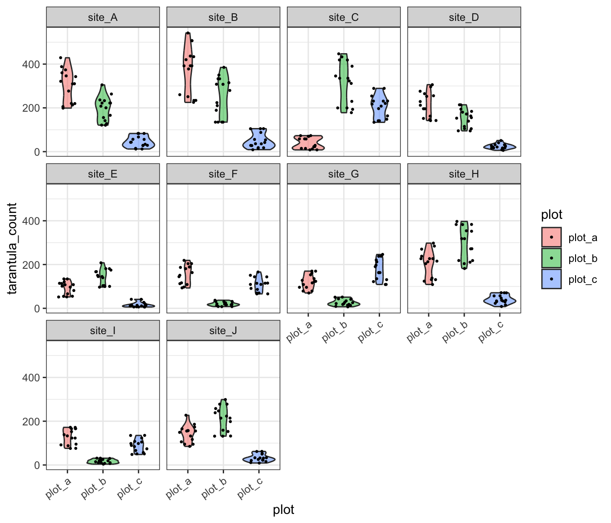

# Note that these lines only need to be run once per computer
## So you can skip this step if you've installed these before
install.packages("tidyverse")
install.packages("lmerTest")
install.packages("palmerpenguins")
install.packages("esc")Analysis & Modeling
Overview
Given the wide range in statistical training in graduate curricula (and corresponding breadth of experience among early career researchers), we’ll be approaching this module in a different way than other modules. This module uses a “flipped approach” where project teams will share and discuss their proposed analyses with one another.
That said, one of our goals for these course materials is that they be a valuable resource to those who are not formally enrolled in the course and this flipped approach could result in a lack of information on a critical topic. To reduce this risk, we have created a typical instructional module dedicated to analyses that are more common in–or exclusive to–synthesis research that we hope is helpful.
Learning Objectives
After completing this module you will be able to:
- Describe proposed analytical methods to an interested audience of mixed prior experience
- Explain nuance in interpretation of results of proposed analyses
- Identify some statistical tests common in synthesis research
- Perform some synthesis-specific analyses
Preparation
Each project group should:
- Prepare a presentation (15-30 min) on their (A) synthesis question, (B) the data they are using to address that question, and (C) their proposed analytical methods
- The presentation modality (e.g., slide deck, website, etc.) is up to the group!
Networking Session
To Be Determined!
Team Presentations of Proposed Methods
Content produced by project teams during the presentation component of this module may be included in the tab panels below or in the ‘Additional Resources’ section at the bottom of this module at the discretion of each team.
For more information on project teams, see here.
Needed Packages
If you’d like to follow along with the code chunks included throughout this module, you’ll need to install the following packages:
We’ll go ahead and load some of these libraries as well to be able to better demonstrate these concepts.
# Load needed libraries
library(tidyverse)
library(lmerTest)
library(palmerpenguins)Hypothesis Framing Aside
Before we dive in, we should discuss two of the ways in which you can frame your hypothesis and the differences in interpretation and appropriate statistical tool(s) that follow from that choice. We’ll restrict our conversation here to two alternate modes of thinking about your hypothesis: frequentist statistics versus multi-model inference.
Note that this is something of a false dichotomy as tools from both worlds can be/are frequently used to complement one another. However, many graduate students are trained by instructors with strong feelings about one method in opposition to the other so it is worthwhile to consider these two paths separately even if you wind up using components of both in your own work.
Hypotheses here are a question of whether a variable has a “significant” effect on another. “Significant” has a very precise meaning in this context that has to do with p-values. Fundamentally, these methods focus on whether the observed relationship in the data is likely to be observed by chance alone or not. Strong effects are less likely–though not impossible–to be observed due to random chance.
If your hypothesis can be summarized as something along the lines of ‘we hypothesize that X affects Y’ then frequentist inference may be a more appropriate methodology.
For the purposes of SSECR, our discussion of frequentist inference will focus on mixed-effect models.
Hyoptheses here are a question of which variables explain the most variation in the data. Methods in this framing are unconcerned–or at least less concerned than in frequentist inference–with the probability associated with a particular variable. Intead, these methods focus on which of a set of user-defined candidate models explains most of the noise in the data even when that best model does not necessarily explain much of that variation in absolute terms.
If your hypothesis can be summarized as something along the lines of ‘we hypothesize that models including X explain more of the variation in Y than those that do not’ then multi-model inference may be a more appropriate methodology.
For the purposes of SSECR, our discussion of multi-model inference will focus on comparing model strengths with AIC.
Mixed-Effects Models
In any statistical test there is at least one response variable (a.k.a. “dependent” variable) and some number of explanatory variables (a.k.a. “independent” variables). However, in biology our experiments often involve repeated sampling over time or at the same locations. These variables (time or site) are neither response nor explanatory variables but we might reasonably conclude that they affect our response and/or explanatory variables.
In essence we want to use a statistical tool that asks ‘what is the effect of the explanatory variable(s) on the response when the variation due to these non-variable considerations is accounted for?’ Such tests are called mixed-effects models. This name derives from considering explanatory variables “fixed effects” and non-explanatory/response variables as “random effects”. Including both fixed and random effects thus creates a model with “mixed effects.”
Types of Random Effect
There are a few types of random effects but we can limit our conversation here to just two: random intercepts and random slopes.
Random intercepts should be used when you expect that the average response differs among levels of that variable but not in a way that changes the relationship between each level of this variable and the other variables (either fixed or random). In statistical terms you want to allow the intercept to change with levels of this variable.
For example, let’s imagine that we are studying the effect of different organic farming practices on beneficial insect populations. We build relationships with several organic farmers willing to let us conduct this research on their properties and sample the insect communities at each farm over the course of a summer. However, we know that each farm is surrounded by a different habitat type that affects the composition of the local insect community. It is reasonable to expect that even farms where ‘the same’ management method is used are likely to differ because of this difference in landscape context.
In cases like this, we don’t want to include a term for ‘site’ as a fixed effect but we do want to account for those differences so that our assessment of the significance of our explanatory variables isn’t limited by the variation due to site.
Random slopes should be used when you expect that the average response differs among levels of that variable in a way that does change with other variables.
For example, let’s imagine that we are studying the effect of temperature on avian malaria rates in songbirds. We identify several sites–along a gradient of daytime temperature ranges–where our species of interest can be found, capture them, and measure malaria infection rates. However, unbeknownst to us at the start of our study, our study sites have varying populations of dragonflies which affects local mosquito populations and malaria transmission/infection rates. If we revisit our sites repeatedly for several years is is reasonable to expect that this difference among sites likely affects the relationship between daytime temperatures and songbird malaria rates.
By including site as a random slope in this context, we can account for this effect and still analyze our explanatory variables of interest. Note that random slopes are very “data hungry” so you may not be able to use them without very high replication in your study design.
Nested Random Effects
To further complicate matters, we can use nested random effects as well. These can be either random intercepts or random slopes though they are more commonly seen with random intercepts. A nested random effect accounts for the effect of one random variable that is itself affected by another variable! A classic example of this is when a study design uses two (or more) levels of spatial nestedness in their experimentall design.
For instance, let’s imagine we were conducting a global study of marine plankton biodiversity. To gether these data we took several cruises (scientific not–exclusively–pleasure) at different places around the world and during each cruise we followed a set of transects. In each transect we did several plankton tows and quantified the diversity of each tow. We can reasonably assume the following:
- Each cruise differs from each other cruise (due to any number of climatic/ecological factors)
- But cruises within the same part of the world are still likely to have similar planktonic communities
- Within each cruise, each transect differs from the others (again, due to unpreventable factors)
- But transects within the same cruise are still likely to be more similar to one another than to transects in different cruises (even other ones in the same region!)
- Within each transect, each plankton tow differs from one another!
- But again, more similar to other tows in the same transect than other tows in different transects/cruises
If we put these assumptions together we realize we want to account for the variation of cruise, transect, and tow while still retaining the nestedness of the similarity among samples. A nested random effect where transect is nested inside of cruise and tow is nested inside of transect would capture this effectively!
Philosophical Note: Random vs. Fixed
Deciding whether a given variable should be a fixed or random effect can be tough. You’ll likely need to rely on your scientific intuition about which feels more appropriate and then be prepared to defend that decision to your committee and/or “reviewer #2”. It may prove helpful though to consider whether you ‘care’ about the effect of that variable.
If your hypothesis includes that variable than it should likely be a fixed effect. If the variable is just a facet of your experimental design but isn’t something you’re necessarily interested in testing, then it should likely be a random effect. And, once you’ve made your decision, it is totally okay to change your mind and tweak the structure of your model!
Mixed-Effects Case Study
Let’s imagine we are researching tarantula populations for several years in the Chihuahuan Desert. Our hypothesis is that the number of tarantulas will be greater in sites further from the nearest road. We select ten study sites of varying distances from the nearest road and intensively count our furry friends at three plots within each site for several months. We return to our sites–and their associated plots–and repeat this process each year for three years. In the second year we have help from a new member of our lab but in the third year we’re back to working alone (they had their own project to handle by then). We enter our data and perform careful quality control to get it into a tidy format ready for analyis.
# Read in data
tarantula_df <- read.csv(file = file.path("data", "tarantulas.csv"))
# Check structure
str(tarantula_df)'data.frame': 450 obs. of 6 variables:
$ year : int 2022 2022 2022 2022 2022 2022 2022 2022 2022 2022 ...
$ road.dist_km : num 64.5 64.5 64.5 64.5 64.5 ...
$ site : chr "site_A" "site_A" "site_A" "site_A" ...
$ plot : chr "plot_a" "plot_a" "plot_a" "plot_a" ...
$ site.plot : chr "A_a" "A_a" "A_a" "A_a" ...
$ tarantula_count: int 199 220 213 206 220 128 156 121 121 142 ...With our data in hand, we now want to run some statistical tests and–hopefully–get some endorphine-inducingly small p-values. If we choose to simply ignore our possible random effects, we could fit a linear regression.
# Fit model
tarantula_lm <- lm(tarantula_count ~ road.dist_km, data = tarantula_df)
# Extract summary
summary(tarantula_lm)- 1
-
R syntax for statistical tests is
response ~ explanatorya.k.a.Y ~ X
Call:
lm(formula = tarantula_count ~ road.dist_km, data = tarantula_df)
Residuals:
Min 1Q Median 3Q Max
-216.916 -77.487 8.486 59.913 316.084
Coefficients:
Estimate Std. Error t value Pr(>|t|)
(Intercept) -3.3935 14.8929 -0.228 0.82
road.dist_km 2.8140 0.2775 10.141 <2e-16 ***
---
Signif. codes: 0 '***' 0.001 '**' 0.01 '*' 0.05 '.' 0.1 ' ' 1
Residual standard error: 100.2 on 448 degrees of freedom
Multiple R-squared: 0.1867, Adjusted R-squared: 0.1849
F-statistic: 102.8 on 1 and 448 DF, p-value: < 2.2e-16This naive test seems to support our hypothesis. However, sampling effort differed between the three study years. Not only was there a second person in the second year but we can also reasonably expect that by the third year in this system we had greatly improved our tarantula-finding skills. So, a random effect of year is definitely justified. We are not concerned that the different study years will affect the relationship between tarantula populations and road distance though so a random intercept is fine.
There could be an argument for including year as a fixed effect in its own right but some preliminary investigations reveal no significant climatic differences across the region we worked in those three years. So, while we think that years may differ from one another, that difference is not something we care to analyze.
# Fit the new model
tarantula_mem1 <- lmerTest::lmer(tarantula_count ~ road.dist_km +
(1|year),
data = tarantula_df)
# Extract summary
summary(tarantula_mem1)- 1
-
This is the syntax for specifying a random intercept (random slope variables should be before the
|where1goes for a random intercept)
Linear mixed model fit by REML. t-tests use Satterthwaite's method [
lmerModLmerTest]
Formula: tarantula_count ~ road.dist_km + (1 | year)
Data: tarantula_df
REML criterion at convergence: 5362.6
Scaled residuals:
Min 1Q Median 3Q Max
-2.6578 -0.7941 0.1653 0.6517 2.9451
Random effects:
Groups Name Variance Std.Dev.
year (Intercept) 1940 44.04
Residual 8747 93.52
Number of obs: 450, groups: year, 3
Fixed effects:
Estimate Std. Error df t value Pr(>|t|)
(Intercept) -3.3935 28.9768 3.1783 -0.117 0.914
road.dist_km 2.8140 0.2589 446.0000 10.868 <2e-16 ***
---
Signif. codes: 0 '***' 0.001 '**' 0.01 '*' 0.05 '.' 0.1 ' ' 1
Correlation of Fixed Effects:
(Intr)
road.dst_km -0.455By including that random effect we actually get a slightly stronger effect of road distance (T value of ~12 without versus ~13 with). This is because our new random effect accounts for some of the ‘noise’ between study years. That actually gives us a better picture of the relationship between our response and explanatory variables.
Now that we’re already using a mixed-effects model, we have little excuse not to account for the other potential random effect: plot! Remember that there were three plots within each site and from our extensive time in the field we have developed a strong intuition that there might be substantial among-plot variation at each site. We can make a quick exploratory graph to facilitate an ‘eyeball test’ of whether the data show what our intuition suggest.
ggplot(tarantula_df, aes(y = tarantula_count, x = plot, fill = plot)) +
geom_violin(alpha = 0.5) +
geom_jitter(width = 0.25, size = 0.5) +
facet_wrap(site ~ .) +
theme_bw() +
theme(axis.text.x = element_text(angle = 35, hjust = 1))- 1
- Violin plots are a nice alternative to boxplots because they allow visualizing data distributions directly rather than requiring an intutive grasp of the distribution metrics described by each bit of a boxplot
- 2
- This is allowing us to ‘tilt’ the X axis tick labels so they don’t overlap with one another

This graph clearly supports our intuition that among-plot variation is dramatic! We could account for this by including plot as a fixed effect but we’ll need to sacrifice a lot of degrees of freedom (can be thought of as “statistical power”) for a variable that we don’t actually care about. Instead, we could include plot as another random effect.
# Fit the new model
tarantula_mem2 <- lmerTest::lmer(tarantula_count ~ road.dist_km +
(1|year) + (1|site.plot),
data = tarantula_df)
# Extract summary
summary(tarantula_mem2)- 1
- Note that we need to use this column as the random effect because plots are not uniquely named across sites (i.e., all sites have plots “a”, “b”, and “c”). Making the random effect just the ‘plot’ column would fail to reflect how plots are nested within each site
Linear mixed model fit by REML. t-tests use Satterthwaite's method [
lmerModLmerTest]
Formula: tarantula_count ~ road.dist_km + (1 | year) + (1 | site.plot)
Data: tarantula_df
REML criterion at convergence: 4553.6
Scaled residuals:
Min 1Q Median 3Q Max
-3.0902 -0.5352 -0.0117 0.5990 3.9323
Random effects:
Groups Name Variance Std.Dev.
site.plot (Intercept) 8165 90.36
year (Intercept) 1991 44.62
Residual 1058 32.52
Number of obs: 450, groups: site.plot, 30; year, 3
Fixed effects:
Estimate Std. Error df t value Pr(>|t|)
(Intercept) -3.393 58.233 23.593 -0.058 0.95402
road.dist_km 2.814 0.973 28.000 2.892 0.00733 **
---
Signif. codes: 0 '***' 0.001 '**' 0.01 '*' 0.05 '.' 0.1 ' ' 1
Correlation of Fixed Effects:
(Intr)
road.dst_km -0.851This test reveals that while there is a significant relationship between road distance and tarantula population but the effect is not nearly as strong as it was when we let plot-level variation be ignored. This is likely due to high (or low) average populations in a single plot skewing the site-level average. Still, this is a result we can be more confident in because we’ve now accounted for all known sources of variation in our data–either by including them as fixed effects or including them as a random effects.
We can create one more graph of our tidy data and use some aesthetic settings to make sure the nested structure of the data is clear to those looking at our work. Note that you could also use predicted values from the model itself though that choice is–arguably–a matter of personal preference.
ggplot(tarantula_df, aes(y = tarantula_count, x = road.dist_km)) +
geom_point(aes(color = plot, shape = as.factor(year)), size = 2, alpha = 0.5) +
geom_smooth(method = "lm", formula = "y ~ x", se = T, color = "black") +
labs(y = "Tarantula Abundance", x = "Distance to Nearest Road (km)") +
theme_bw()
Multi-Model Inference
Regardless of your choice of statistical test, multi-model inference may be an appropriate method to use to assess your hypothesis. As stated earlier, this frames your research question as a case of which variables best explain the data rather than the likelihood of the observed effect relating to any variable in particular.
To begin, it can be helpful to write out all possible “candidate models”. For instance, let’s say that you measured some response variable (Y) and several potential explanatory variables (X, W, and Z). We would then fit the following candidate models:
- X alone explains the most variation in Y
- W alone explains the most variation in Y
- Z alone explains the most variation in Y
- X, W, and Z together explain the most variation in Y
We might also fit other candidate models for pairs of X, W, and Z but for the sake of simplicity in this hypothetical we’ll skip those. Note that for this method to be appropriate you need to fit the same type of model in all cases!
Once we’ve fit all of our models and assigned them to objects, we can use the AIC function included in base R to compare the AIC score of each model. “AIC” stands for Akaike (AH-kuh-ee-kay) Information Criterion and is one of several related information criteria for summarizing a model’s explanatory power. Models with more parameters are penalized to make it mathematically possible for a model with fewer explanatory variables to still do a better job capturing the variation in the data.
The model with the lowest AIC best explains the data. Technically any difference in AIC indicates model improvement but many scientists use a rule of thumb of a difference of 2. So, if two models have AIC scores that differ by less than 2, you can safely say that they have comparable explanatory power. That is definitely a semi-arbitrary threshold but so is the 0.05 threshold for p-value “significance”.
AIC Case Study
Let’s check out an example using AIC to compare the strengths of several models. Rather than using simulated data–as we did earlier in the mixed-effect model section–we’ll use some real penguin data included in the palmerpenguins package.
This dataset includes annual data on three penguin species spread across several islands. The sex of the penguins was also recorded in addition to the length of their flippers, body mass, and bill length and depth.
For the purposes of this example, our research question is as follows: what factors best explain penguin body mass?
# Load the penguins data from the `palmerpenguins` package
data(penguins)
# Make a version where no NAs are allowed
peng_complete <- penguins[complete.cases(penguins), ]
# Check the structure of it
dplyr::glimpse(peng_complete)- 1
-
This is a base R way of keeping only rows that have no
NAvalues in any column. It is better to identify and handleNAs more carefully but for this context we just want to have the same number of observations in each model
Rows: 333
Columns: 8
$ species <fct> Adelie, Adelie, Adelie, Adelie, Adelie, Adelie, Adel…
$ island <fct> Torgersen, Torgersen, Torgersen, Torgersen, Torgerse…
$ bill_length_mm <dbl> 39.1, 39.5, 40.3, 36.7, 39.3, 38.9, 39.2, 41.1, 38.6…
$ bill_depth_mm <dbl> 18.7, 17.4, 18.0, 19.3, 20.6, 17.8, 19.6, 17.6, 21.2…
$ flipper_length_mm <int> 181, 186, 195, 193, 190, 181, 195, 182, 191, 198, 18…
$ body_mass_g <int> 3750, 3800, 3250, 3450, 3650, 3625, 4675, 3200, 3800…
$ sex <fct> male, female, female, female, male, female, male, fe…
$ year <int> 2007, 2007, 2007, 2007, 2007, 2007, 2007, 2007, 2007…With our data in hand and research question in mind, we can fit several candidate models that our scientific intuition and the published literature support as probable then compare them with AIC.
# Species and sex
mod_spp <- lm(body_mass_g ~ species + sex, data = peng_complete)
# Island alone
mod_isl <- lm(body_mass_g ~ island, data = peng_complete)
# Combination of species and island
mod_eco <- lm(body_mass_g ~ island + species + sex, data = peng_complete)
# Body characteristics alone
mod_phys <- lm(body_mass_g ~ flipper_length_mm + bill_length_mm + bill_depth_mm,
data = peng_complete)
# Global model
mod_sink <- lm(body_mass_g ~ island + species + sex +
flipper_length_mm + bill_length_mm + bill_depth_mm,
data = peng_complete)- 1
- We’ve named the global model “sink” because of the American idiom “everything but the kitchen sink.” It is used in cases where everything that can be included has been
Once we’ve fit all of these models, we can use the AIC function from base R (technically from the stats package included in base R).
# Compare models
AIC(mod_spp, mod_isl, mod_eco, mod_phys, mod_sink) %>%
dplyr::arrange(AIC)- 1
-
Unfortunately, the
AICfunction doesn’t sort by AIC score automatically so we’re using thearrangefunction to make it easier for us to rank models by their AIC scores
df AIC
mod_sink 10 4727.242
mod_spp 5 4785.594
mod_eco 7 4789.480
mod_phys 5 4929.554
mod_isl 4 5244.224Interestingly, it looks like the best model (i.e., the one that explains most of the data) is the global model that included most of the available variables. As stated earlier, it is not always the case that the model with the most parameters has the lowest AIC so we can be confident this is a “real” result. The difference between that one and the next (incidentally the model where only species and sex are included as explanatory variables) is much larger than 2 so we can be confident that the global model is much better than the next best.
With this result your interpretation would be that penguin body mass is better explained by a combination of species, sex, physical characteristics of the individual penguin, and the penguin’s home island than it is by any of the other candidate models. In a publication you’d likely want to report this entire AIC table (either parenthetically or in a table) so that reviewers could evaluate your logic.
Meta-Analysis
Many synthesis projects are able to find the original data of each study, harmonize that data, and then perform standard analyses on that synthesized data. However, in some cases you may find that the data used in different projects are not directly comparable. For instance, if you want to know what the effect of restoration methods are on forest recovery you might not be able to simply combine data from different studies that use widely different restoration methods, data collection methods, and have different forest community compositions. In such cases you can use meta-analysis to compare the results of different studies rather than using their data. Meta-analysis is named the way it is because it is an analysis of prior analyses.
To perform meta-analysis you’ll need to calculate an “effect size” for all studies you’d like to include. An effect size captures the direction and magnitude of the relationship analyzed in each original study. If you use a standard effect size calculation for each stud, you’ll make it possible to directly compare results across these studies (even if context differs among them!). Note that some people disagree with the word “effect” in “effect size” because it suggests a causal relationship; for our purposes, let’s consider ‘effect’ to be inclusive of correlative relationships and ignore the possible implication of causality.
In order to calculate these effect sizes you’ll need to extract the following information from each study:
- A measure of the ‘central tendency’ of the response
- Often the arithmetic mean but can also be a proportion or a correlation
- You’ll need to do this separately for any groups within the study
- A measure of the variation in the response
- Typically standard deviation
- The sample size of the response
Once you have that information, you can calculate effect sizes for the various groups in each study. Note that the importance of this information to meta-analyses should also highlight how vital it is that you report this information in your own research! Doing so will enable future meta-analyses to include your study and increase the scientific impact of your work as well as its professional benefits to you.
One such effect size is Cohen’s d and is a reasonable effect size for quantifying the difference in means between two groups. In order to perform this calculation you simply need the mean, standard deviation, and sample size for two groups. Let’s check out an example to demonstrate.
# Load needed library
library(esc)
# Calculate Cohen's d
calc_effect <- esc::esc_mean_sd(grp1m = 50, grp2m = 60,
grp1sd = 10, grp2sd = 10,
grp1n = 50, grp2n = 50)
# Check out output
calc_effect
Effect Size Calculation for Meta Analysis
Conversion: mean and sd to effect size d
Effect Size: -1.0000
Standard Error: 0.2121
Variance: 0.0450
Lower CI: -1.4158
Upper CI: -0.5842
Weight: 22.2222Note that Cohen’s d is just one effect size available to you and others may be more appropriate in certain contexts. Just like any other metric, which effect size you choose is a mix of your scientific intution and appropriateness for the content of your data. For a deeper dive into the breadth of effect size considerations available to you, see the relevant chapter of the Doing Meta-Analysis in R online book.
After you’ve calculated all relevant effect sizes–using your chosen flavor of effect size–the “actual” meta-analysis is nearly finished. Simply create a graph of the effect sizes with error bars indicating confidence intervals (included by default in most effect size functions). Where the error bars overlap among studies, there is no significant difference between those effect sizes. Conversely, where the error bars do not overlap among studies the effect sizes do significantly differ indicating that the studies results’ differ for the data used to calculate the effect size.
Additional Resources
Papers & Documents
- Spake, R. et al. Understanding ‘It Depends’ in Ecology: A Guide to Hypothesising, Visualising and Interpreting Statistical Interactions. 2023. Biological Reviews
- Spake, R. et al. Improving Quantitative Synthesis to Achieve Generality in Ecology. 2022. Nature Ecology and Evolution
- Tredennick, A.T. et al. A Practical Guide to Selecting Models for Exploration, Inference, and Prediction in Ecology. 2021. Ecology
- Harrier, M. et al. Doing Meta-Analysis with R: A Hands-On Guide. 2021.
- Zuur, A.F. et al. Mixed Effects Models and Extensions in Ecology with R. 2009.
Workshops & Courses
- Vuorre, M. Bayesian Meta-Analysis with R, Stan, and brms. 2016.
Websites
- Kurz, A. S. Bayesian Meta-Analysis in brms-II. 2022.
- Viechtbauer, W. Meta-Analysis with R. 2022.
- Viechtbauer, W. The
metaforPackage: A Meta-Analysis Package for R. 2021. - Kurz, A. S. Bayesian Meta-Analysis in brms. 2020.